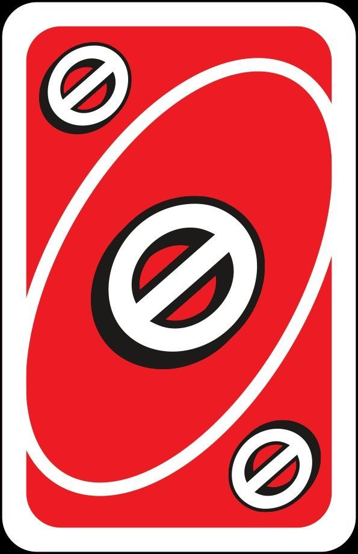
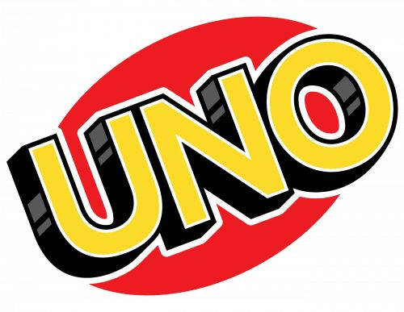
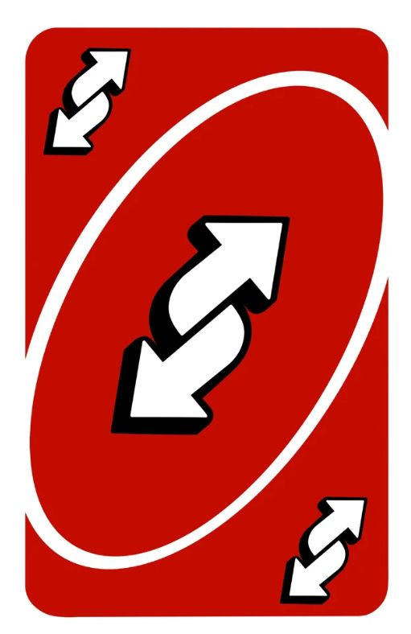
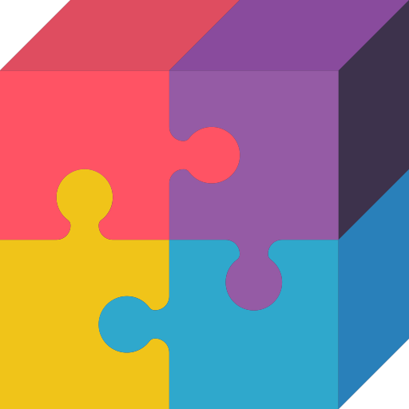
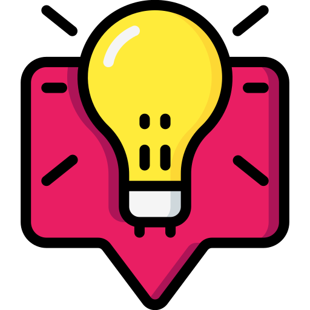

Welcome to UNO Guide
Your complete resource for learning and mastering the classic card game UNO



Game Rules
Learn the complete rules of UNO, including how to play, special cards, and winning strategies.

Game Types
Explore different variations of UNO, from classic to house rules and modern versions.

Strategy Tips
Master advanced techniques and strategies to become an unbeatable UNO player.
About UNO
History
UNO is a card game that was created in 1971 by Merle Bradley, an American who taught the game to his family and friends. The game was first marketed by International Games Inc., and by 1972, it was licensed by Mattel. Today, UNO is one of the most popular card games in the world, played by millions of people across all age groups.
How to Play
UNO is a fast-paced card game where players take turns playing cards matching either the color or number of the card on top of the discard pile. The goal is to be the first player to get rid of all your cards. Players can play special action cards like Skip, Reverse, and Draw Two to gain advantages. When a player is down to their last card, they must shout "UNO!" or face penalties.
Basic Rules
- Each player starts with 7 cards
- Players take turns playing cards that match the color or number of the discard pile
- If unable to play, draw a card from the deck
- Special cards (Skip, Reverse, Draw Two) affect gameplay
- Wild cards can be played anytime and let you choose the color
- First player to eliminate all cards wins the round
- Points are calculated based on remaining cards in opponents' hands
Card Values & Types
In scoring, number cards are worth their face value (0-9), Skip and Reverse cards are worth 20 points, Draw Two cards are worth 20 points, Wild cards are worth 50 points, and Wild Draw Four cards are worth 50 points. Each color (Red, Yellow, Blue, Green) appears on number and action cards, making strategic play essential.
UNO Game Types & Variations
Explore different ways to play UNO with these popular variations and house rules
Classic UNO
The traditional game with 108 cards featuring numbers, action cards, and Wild cards.
UNO Flip
Two-sided cards with a flip mechanic that changes gameplay when activated.
UNO Attack
Features an electronic device that randomly shoots out cards for unpredictable gameplay.
UNO Spin
A spinner dial creates random effects during gameplay for added excitement.
UNO Stacko
Combines cards with physical wooden blocks for a dexterity challenge.
House Rules UNO
Modified versions with custom rules that vary by player preference.
Beginner's Strategy Guide
1. Play Offensively: Use action cards strategically to disrupt opponents' plans and prevent them from winning easily.
2. Manage Your Cards: Try to keep a balanced hand. Get rid of high-value cards early to minimize point loss if you don't win.
3. Watch Your Opponents: Pay attention to what colors and numbers other players are playing. This helps predict their strategies.
4. Don't Waste Wild Cards: Save Wild and Wild Draw Four cards for critical moments when you absolutely need them.
5. Remember to Say UNO: Always shout "UNO!" when you're down to your last card to avoid drawing penalty cards.
Get in Touch
Email: d.akhwan07@gmail.com
 Phone:
089678847278
Phone:
089678847278
Feel free to reach out with questions about UNO or any feedback about this guide!